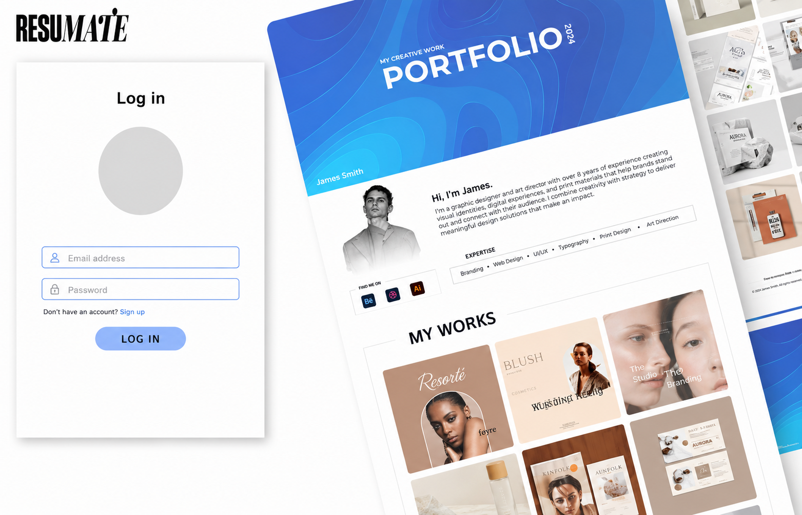
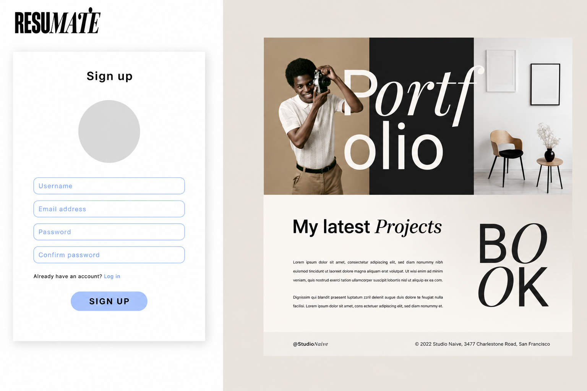
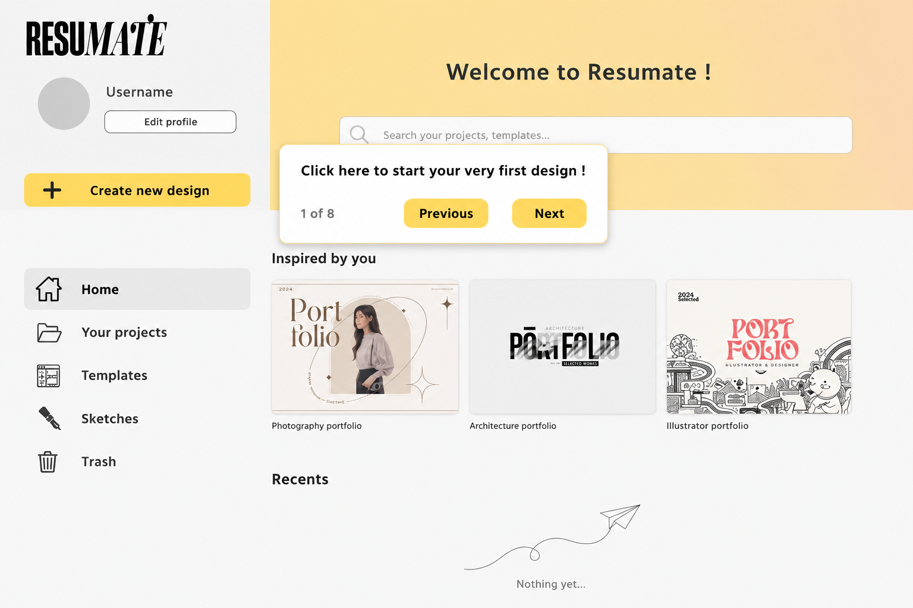
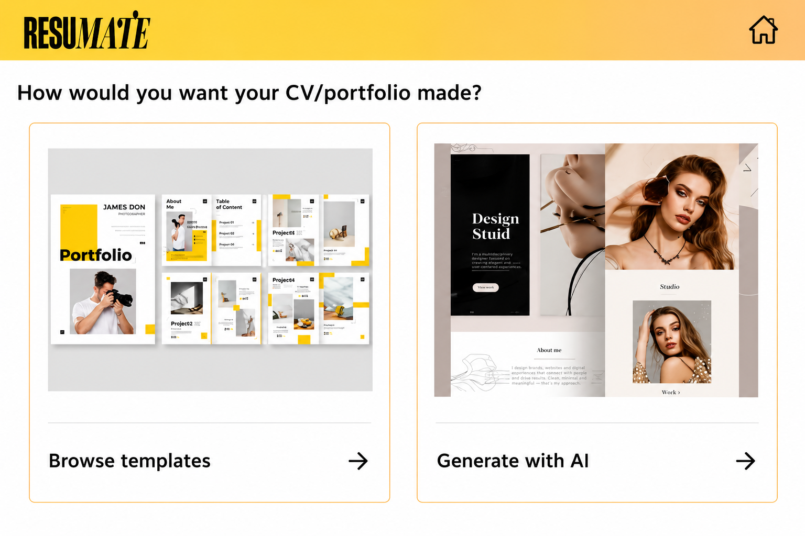
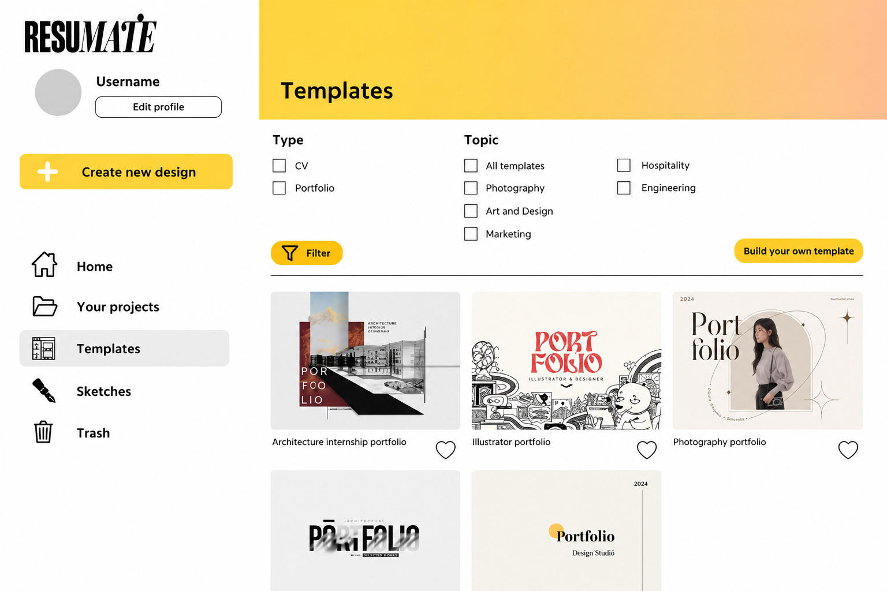
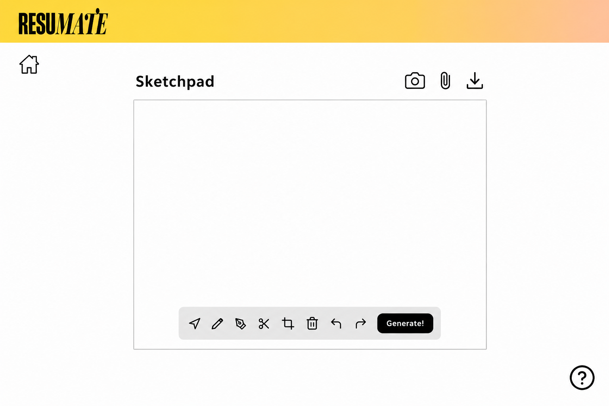
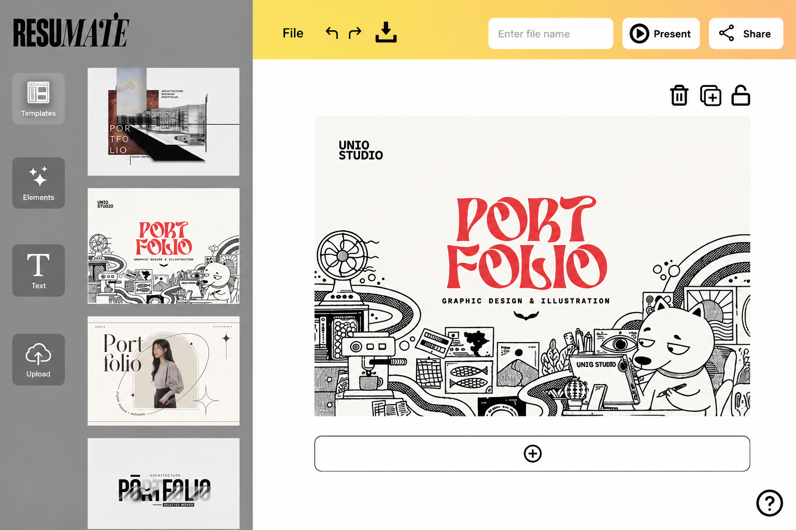

2024
Resumate
A portfolio makes it real.
- Role
- UX/UI Designer
- Duration
- 12 weeks
- Tools
- Figma
Simplifying the
process
Resumate was designed to simplify resume creation for students and job seekers by breaking a traditionally overwhelming process into a series of guided, approachable steps. The interface prioritises clarity, accessibility and ease of use to help users focus on their content rather than formatting.
Designing the
experience
The experience was designed around a linear workflow, guiding users from account creation through resume editing and export. Each screen was structured to minimise cognitive load while maintaining a clean and familiar interface.
- 01Sign Up / Log In

01
01Beginning the
journey
Every journey begins with a first impression. Rather than presenting users with a blank workspace, Resumate introduces its key features through a calm and guided onboarding experience, helping users understand the platform before creating their first resume.
- 02Onboarding

02Designed around
choice
Creativity begins in different ways for different people. Rather than prescribing a single workflow, Resumate empowers users to choose the approach that best suits them, creating a flexible experience that supports both guided creation and complete creative freedom.
- 03Create New Project
- 04Templates / AI Generation

03
04
04Where creativity
takes shape
Every portfolio tells a different story. The editing interface encourages experimentation by giving users the flexibility to refine layouts, replace content and personalise every detail—all within a workspace designed to feel familiar and distraction-free.
- 05Customisation

05Looking back
Resumate marked an important step in my journey as a UX/UI designer. The principles explored throughout this project became the foundation for my later work, where they evolved into more comprehensive and fully realised digital experiences.